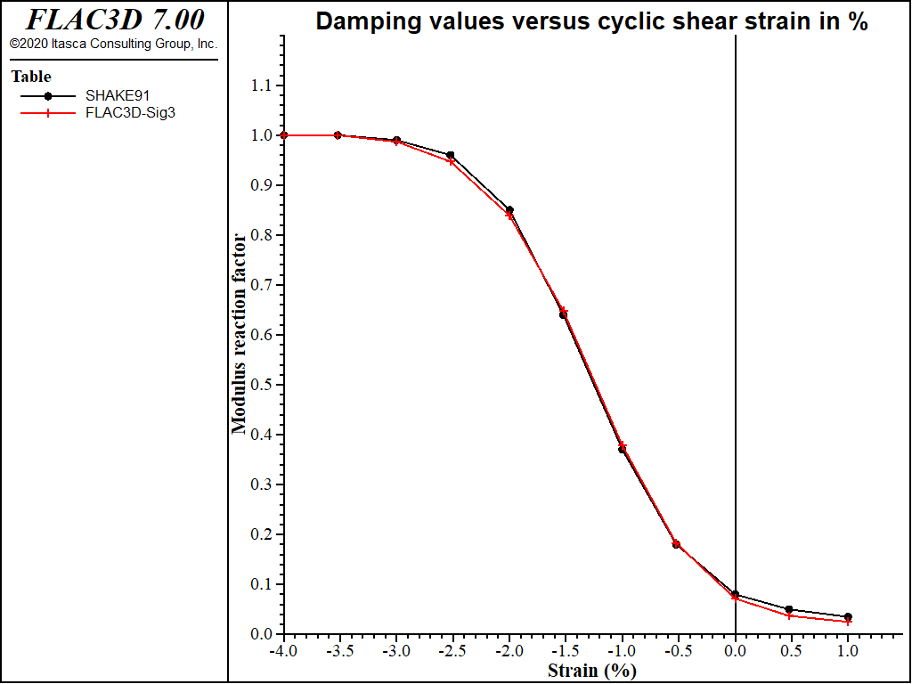
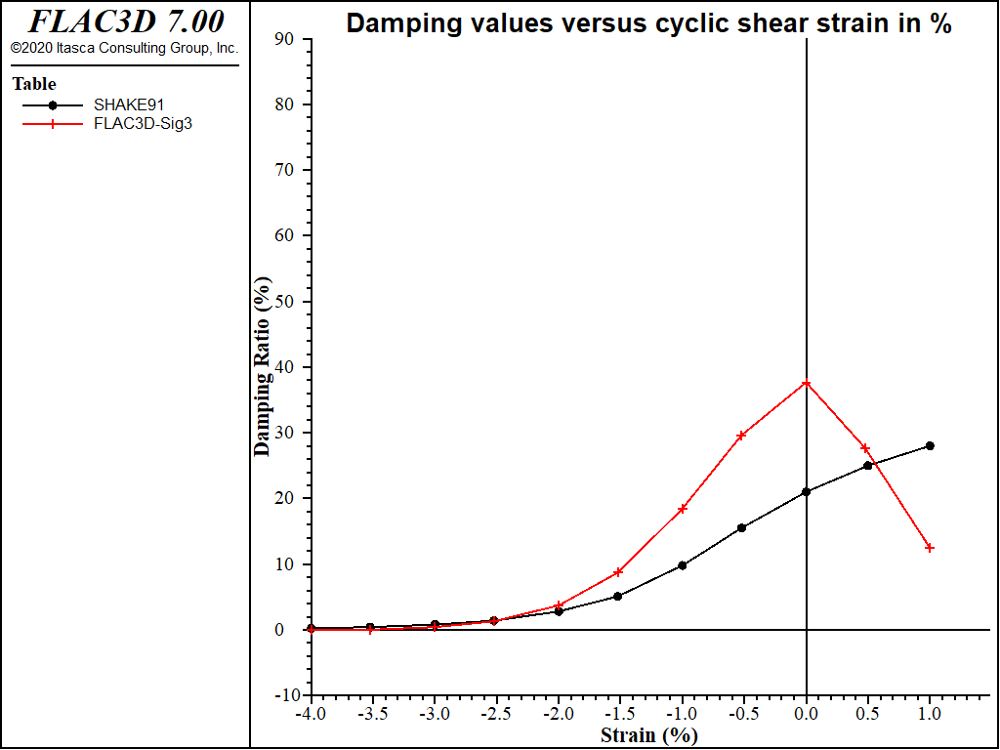
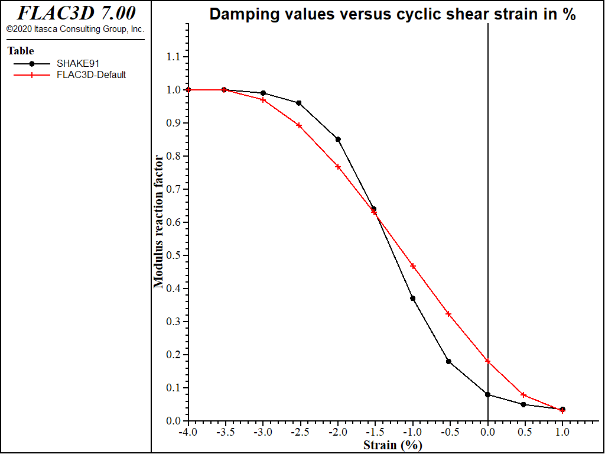
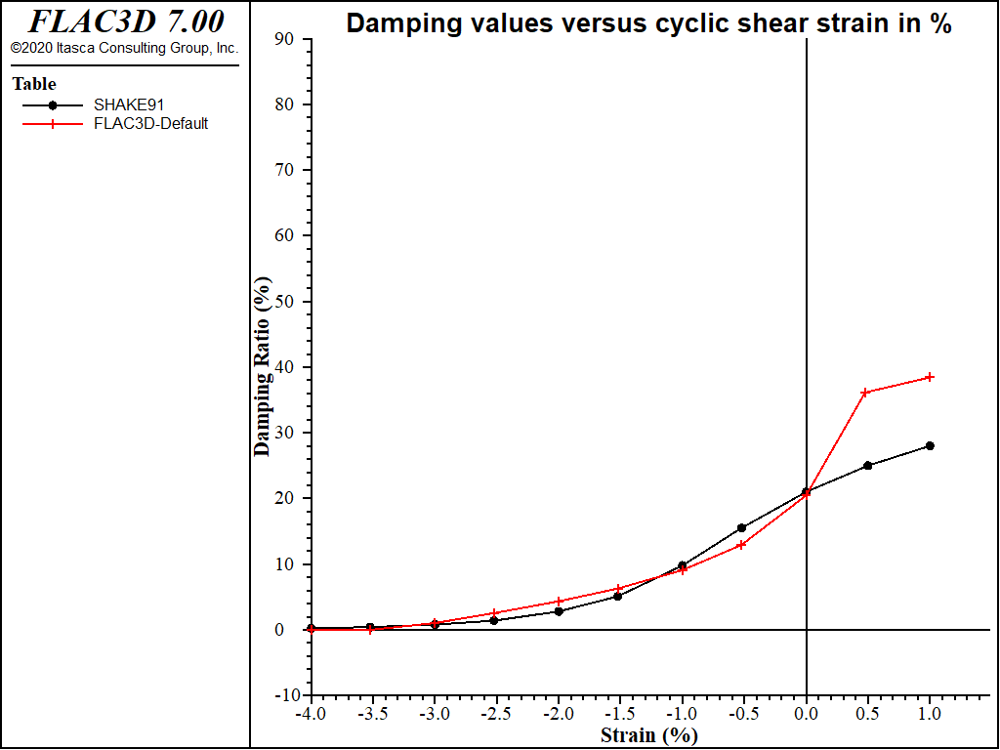

在若干循环应变水平下试验的单网格单元试样
注意
要在 FLAC3D 中查看此项目，请使用菜单命令 。选择“Dynamic/SeveralCyclingStrainLevels”并选择“SeveralCyclicStrainLevels.f3prj”以加载。 所用主数据文件见本示例末尾（main data files）。其余数据文件可在项目中找到。
这是一个小示例，通过重复执行单网格单元模型来生成 模量折减曲线和阻尼比曲线，使用了退化曲线标定（Calibration of Degradation Curves）中讨论的 sig3 模型拟合方法。
以下命令用于调用滞回阻尼（见针对砂的 Seed 与 Idriss 数据数值拟合（Numerical fits to Seed & Idriss Data for Sand）中的 sig3 参数）：
zone dynamic damping hysteretic sig3 1.014 -0.4792 -1.249
结果汇总于 图 1（Figures 1） 和 2，其中给出了 FLAC3D 的切线模量结果和 阻尼比结果以及 Seed 与 Idriss 的结果。尽管模量结果在五个数量级范围内都与目标数据吻合良好 （图 1（Figure 1）），但实测阻尼在同一范围内与同一材料已发表的阻尼曲线 吻合不佳 （图 2（Figure 2））。


图 1：sig3 模型若干循环 FLAC3D 模拟的结果——割线模量值与循环剪应变（%）的关系。同时给出砂的 Seed 与 Idriss 数据。


图 2：sig3 模型若干循环 FLAC3D 模拟的结果——阻尼值与循环剪应变（%）的关系。同时给出砂的 Seed 与 Idriss 数据。
显然，已发表的模量和阻尼数据与应变和时间无关材料响应的概念模型 并不一致。尚不清楚这两组已发表数据是否来自不同的试验，或试验的性质是否导致了 这种不一致。例如，稳态响应（在多次施加应变循环之后） 可能不同于初始（单次循环）响应。若果真如此，则 并无法证明稳态响应（推测已包含在已发表结果中）在典型地震模拟中 比单次循环响应更具代表性，因为许多地震只包含一两个大幅值循环。因此， 单次循环响应可能更正确地反映地震荷载作用下材料的行为。在这种情况下，阻尼曲线和模量曲线是一致的。
请注意，数值结果是自洽的，因为两条曲线（归一化剪切 模量和阻尼比）源自同一基本应力-应变关系。由模量折减曲线推导 增量应力/应变关系时假定滞回机制是定常的（即应力仅取决于应变， 而不取决于已执行的循环次数或既往历史）。真实土中往往存在硬化或 软化过程，使相继的循环有所不同，这也可能解释为什么在典型实验室试验中 模量折减与相应阻尼曲线明显不一致。
尽管所实现的滞回阻尼忽略了这些非定常效应，仍 有可能使模量曲线和阻尼曲线都达到合理精度。在缺乏 一致实验室数据的情况下，建议采用折中方法，即在合理的应变范围 （对应于所模拟的应变）内同时拟合阻尼曲线和模量曲线。作为该策略的示例，采用默认 模型，给出了 图 3（Figures 3） 和 4 中所示的 FLAC3D 结果。此情况下的滞回阻尼通过以下命令 调用（见针对砂的 Seed 与 Idriss 数据数值拟合（Numerical Fits to Seed & Idriss Data for Sand）中的 default 参数）
zone dynamic damping hysteretic default -3.5 1.3
结果表明，在中间应变范围（例如 0.001% 至 0.3% 应变）内，对 Seed 与 Idriss 的模量曲线和阻尼曲线均有近似拟合。


图 3：default 模型若干循环 FLAC3D 模拟的结果——割线模量值与循环剪应变（%）的关系。同时给出砂的 Seed 与 Idriss 数据。


图 4：default 模型若干循环 FLAC3D 模拟的结果——阻尼值与循环剪应变（%）的关系。同时给出砂的 Seed 与 Idriss 数据。
参考文献
Seed, H. B., and I. Idriss. “Influence of Soil Conditions on Ground Motion during Earthquakes,” J. Soil Mech. Found., Div. ASCE, 95, 99-137 (1969).
Seed, H. B., and I. Idriss. “Simplified Procedure for Evaluating Soil Liquefaction Potential,” J. Soil Mech. & Foundations, Div. ASCE, 97(SM9), 1249-1273 (1971).
Seed, H. Bolton, and I. M. Idriss. “Soil Moduli and Damping Factors for Dynamic Response Analysis,” Earthquake Engineering Research Center, University of California, Berkeley, Report No. UCB/EERC-70/10, p. 48 (December 1970).
数据文件
SeveralCyclicStrainLevels.dat
;---------------------------------------------------------------------
; 动力问题所用脚本文件
; 在多个循环应变水平下加载的单网格单元试样
;---------------------------------------------------------------------
model new
fish automatic-create off
model configure dynamic
[global strainLis=list.sequence(.0001,.0003,.001,.003,.01,.03,.1,.3,1,3,10)]
fish define runAll
loop local CaseNumber (1,list.size(strainLis))
local CycStrain = strainLis(CaseNumber)
command
program call 'sig3'
program call 'default'
end_command
end_loop
end
[runAll]
model save 'allCases'
sig3.dat
model large-strain off
; SeveralCyclicStrainLevels 算例中的单个工况
;
; 创建网格单元
zone create brick size 1 1 1
; 分配模型和属性
zone cmodel assign elastic
zone property density 1000 shear 1e8 bulk 2e8
; 边界条件
zone gridpoint fix velocity
zone gridpoint initialize velocity-x [CycStrain/10.0] range position-z=1
; 动力设置
model dynamic timestep fix 1.0e-4
zone dynamic damping hysteretic sigmoidal-3 1.014 -0.4792 -1.249 ...
reduction-minimum 0.02
; 历程
zone history name='stress' stress-xz position (0.5,0.5,0.5)
zone history name='strain' strain-increment-xz position (0.5,0.5,0.5)
history interval 1
; 循环加载
model cycle 1000
zone gridpoint initialize velocity-x -1 multiply
model cycle 2000
zone gridpoint initialize velocity-x -1 multiply
model cycle 2000
; 将结果历史记录导出到表
history export 'stress' vs 'strain' table ['sig3-'+string(CaseNumber)]
; 清除模型以便进行下一次计算
zone delete
history delete
default.dat
model large-strain off
; SeveralCyclicStrainLevels 算例中的单个工况
;
; 创建网格单元
zone create brick size 1 1 1
; 分配模型和属性
zone cmodel assign elastic
zone property density 1000 shear 1e8 bulk 2e8
; 边界条件
zone gridpoint fix velocity
zone gridpoint initialize velocity-x [CycStrain/10.0] range position-z=1
; 动力设置
model dynamic timestep fix 1.0e-4
zone dynamic damping hysteretic default -3.5 1.3 reduction-minimum 0.01
; 历程
zone history name='stress' stress-xz position (0.5,0.5,0.5)
zone history name='strain' strain-increment-xz position (0.5,0.5,0.5)
history interval 1
; 循环加载
model cycle 1000
zone gridpoint initialize velocity-x -1 multiply
model cycle 2000
zone gridpoint initialize velocity-x -1 multiply
model cycle 2000
; 将结果历史记录导出到表
history export 'stress' vs 'strain' table ['default-'+string(CaseNumber)]
; 清除模型以便进行下一次计算
zone delete
history delete
⇐ One-Zone Sample Loaded in Shear with Strain Rate Reversal | One-Dimensional Earthquake Excitation of a Uniform Layer ⇒
| 这些内容对您有帮助吗？… | FLAC3D © 2019, Itasca | 原文更新于 2020 年 10 月 8 日 |